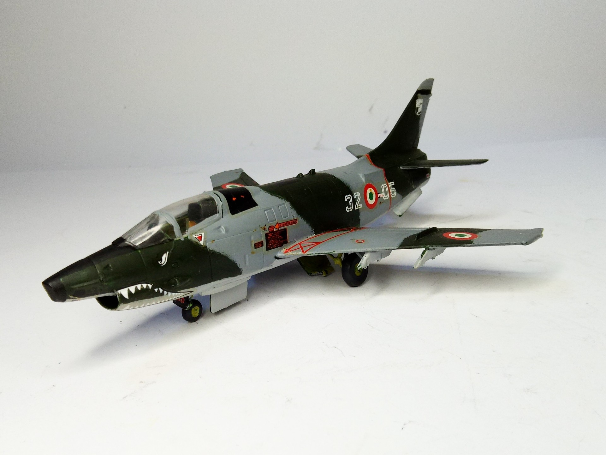
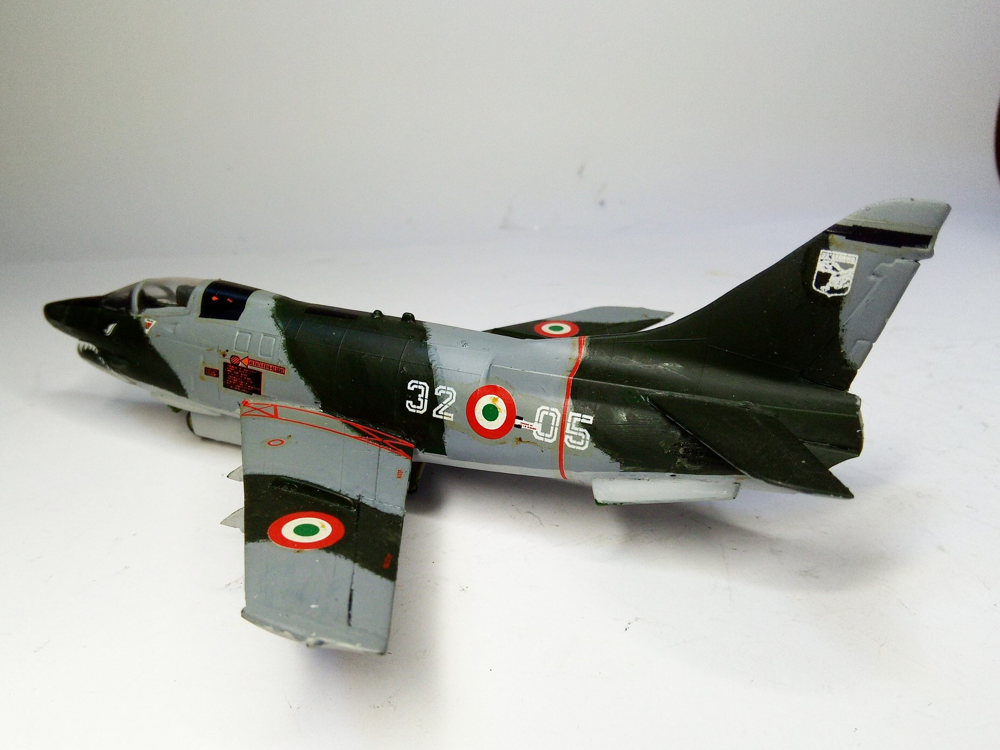

Aerei · scale model archive
FIAT G91 Y
FIAT G91 Y — Kit: Matchbox, Scale: 1/72. Improved twin engined version of the G91, much nicer #1/72 #Matchbox #FIAT #G91Y

Photo gallery

English description
Improved twin engined version of the G91, much nicer
#1/72 #Matchbox #FIAT #G91Y
Descrizione italiana
Versione bimotore migliorata del G91, molto più bella.